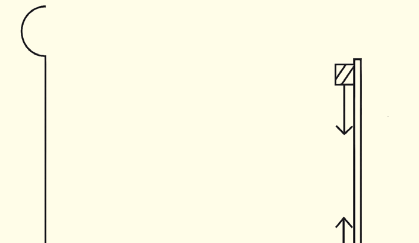

Activity 4.12
Aim:To determine the focal length of a concave mirror using a non-parallax method.
Materials:concave mirror, bench, optical pins, screen, metre rule, corks
Procedure
1.
Mount the concave mirror on a bench.
2.
Fix an optical pin on a cork, then fix it on a screen.
3.
Move the pin (object) until an inverted (real) image appears in front of the mirror, as illustrated in Figure 4.32.

Metre ruleImageScreenObjectFigure 4.32
4.
Adjust the position of the object pin until there is no parallax between it and its image.
5.
Measure the distance between the mirror and the image formed at this point.
8.
Measure the image distance, v, from the screen to the mirror and the object distance, u, from the crosswire to the mirror.
9.
Change the object distance and measure the corresponding image distances.Obtain at least 5 sets of u and v.
10.
Using the mirror equation,
(a) Calculate the focal length of the mirror.
(b) Determine the average focal length of the mirror.
Question
Why did you obtain different values of f for different sets of u and v?
This activity has shown that the unknown focal length of a concave mirror can be determined by experimenting with an illuminated object.
Although measurement errors can affect the experiment, the method can effectively estimate the focal length of a given concave mirror.
Questions
What is the significance of the distance between the mirror and its image?
From this activity, the position of the image pin is at the centre of curvature.
The focal length of the mirror can be obtained from;
Activity 4.12